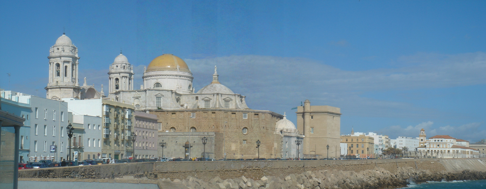
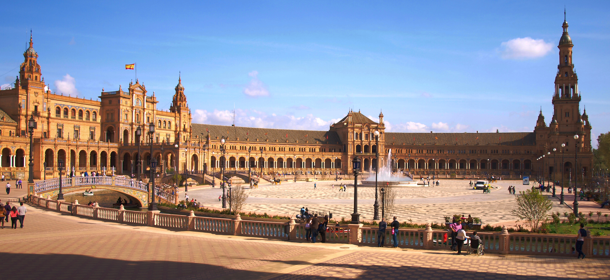
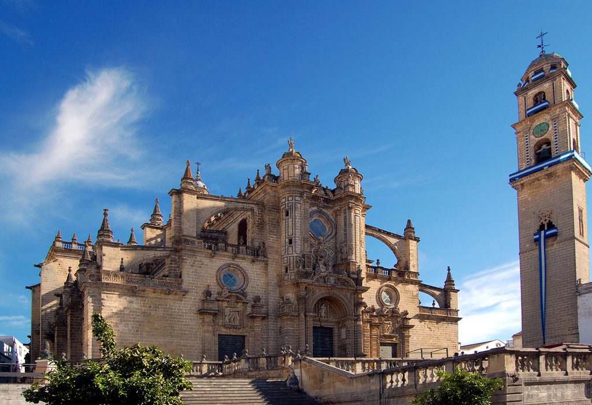

Local Areas
Cadiz
Cadiz is steeped in history and is one of the oldest cities in Europe. It stands on a peninsular jutting out into a bay and is almost entirely surrounded by water. The southerly side of the city is fringed with the golden sandy beaches this coastline provides.
Cadiz has a rich and interesting history, which is apparent all around the older parts of the city, its Moorish and Christian heritage being obviously apparent. As you wander pass the magnificent buildings lining the road in front of the modern busy port, you enter the old city. Hidden in the depths of the maze of narrow winding streets are the treasures of its history displayed in its myriad buildings, monuments, unique little shops and many small pretty plazas.
Emerging on the other side, you enter a large square dominated by its fabulous cathedral which is just across the road from the long beaches and fort of the old town. It is while wandering through this marvelous old area that the charm of Cadiz becomes apparent, and with its famous Flamenco Restaurant, theatres and open air concert park, this city is a lively bustling city where people live modern lives in its historic heritage. These little streets come alive at night with street stalls, entertainers and outdoor concerts and flamenco demonstrations. It is also in these streets that Cadiz hosts its famous Easter carnival, which attracts visitors from very long distances.
Seville
 Seville is a beautiful city with so many of its treasures hiding behind small doorways. The inner city is beautiful with a wonderful mix of old and new side by side in excellent contrast. The city has lovely parks, buildings and stunning churches, but its heart is the old town of narrow winding streets that throngs with visitors wandering in its many little shops and restaurants.
Home to many attractions, Seville hosts an annual horse show and on its river banks, is the Isla de Magica, a theme park which has shows, rides for all ages, animals and evening shows and entertainments; definitely worth a visit.
Jerez
Just a few kilometres south of Seville is the town of Jerez de la Frontera.
 It has all the wonderful charm of the white villages, with a superb example of Moorish buildings and gardens in its Alcazar.
Old town buildings have been renovated to house a collection of Moroccan Artesian workshops where you can watch your purchase being made.
Also nearby, the Hamman Moorish Bath House has also been recently renovated and is now fully operation for those wishing to pamper themselves.
Jerez is famous for many things, such as its Sherry and Brandy Bodegas, the majority of which host tours, with a little sampling of the product at the end.
Another famous attraction is the Jerez Horse School and of course Jerez also hosts Horse shows and its annual fiesta features its horse tradition. An extremely popular event!